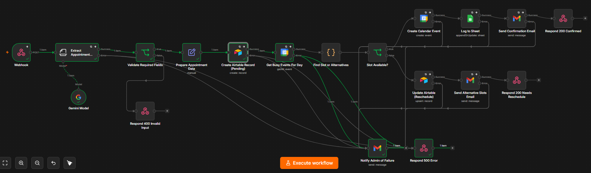

Advanced Appointment Setter
An AI-powered appointment booking assistant that takes a form submission (from Jotform) and fully automates checking availability, booking the calendar, logging records, and emailing the customer — with no human touching it unless something goes wrong.



- 1. Trigger — Webhook: Jotform posts form submissions to this webhook, using Jotform's auto-generated plain-English summary of all form answers.
- 2. Extract Appointment Details (Gemini AI): An AI "Information Extractor" reads that raw text and pulls out structured fields — name, email, address, phone, date, and time — auto-converting natural language like "2pm" into 24-hour format.
- 3. Validate Required Fields: Checks that name, a valid email, and a date were actually extracted. If not, the customer gets an immediate error asking them to resubmit — no bad data enters the system.
- 4. Prepare Appointment Data: Builds a clean record with a 1-hour time slot and marks status as "Pending."
- 5. Create Airtable Record (Pending): Logs the request immediately, so there's a record even before availability is confirmed.
- 6. Check Google Calendar availability: Pulls all events for that business day (9am–5pm) and checks for overlaps with the requested slot.
- 7. Branch — Is the slot available? Yes → creates the calendar event, logs to Sheets, emails a confirmation, returns 200. No → marks "Needs Reschedule," emails up to 3 alternative times, returns 200 needs_reschedule.
- 8. Error handling: Every external step has a fallback — failures email the admin directly and return a 500, so nothing fails silently.
- Zero manual scheduling work — a lead fills out a form and either gets booked or gets alternatives, instantly, 24/7
- No double-booking — actively checks the calendar before confirming
- Full audit trail — every request lands in Airtable, successful bookings also land in a Google Sheet
- Graceful degradation — bad input is rejected politely; system failures alert the admin directly instead of losing the customer's request
E-Commerce Order Processing
Triggered by a webhook, then fans out to three parallel actions — notifying the customer, the fulfillment team, and inventory tracking simultaneously instead of one after another.

- Trigger — Order Received (Webhook): Listens for POST requests at /order-received — where a Jotform submission gets sent via Jotform's webhook integration.
- Map Jotform Fields (Code node): Jotform's payloads are messy — field names vary (q2_customer_name, customerName, etc.) depending on how the form was built, and Jotform also sends a "pretty string" fallback. This node normalizes everything into a clean object: customer name, email, order ID, items, total, and shipping address.
- Fan-out to three parallel branches:
- → Send Confirmation Email (Gmail): Sends an HTML order-confirmation email with order ID, items, and total.
- → Send Packing Instructions (Slack → #inventory): Posts order details plus a packing checklist for the fulfillment team.
- → Update Inventory (Google Sheets → append): Logs the order as a new row in the tracking spreadsheet.
- Handles inconsistent Jotform field naming with a resilient lookup + "pretty string" fallback
- Three actions fire in parallel instead of a slow sequential chain — customer, warehouse, and inventory all stay in sync instantly
- Retries 3x on every external call before escalating to a Slack failure alert
Invoice & Payment Automation
Manual invoice intake and collections follow-up is a classic small-business time sink — someone has to open, retype, confirm, remember to follow up, and escalate, all while juggling other work. This workflow replaces that entire chain end to end.

Freelancers, small agencies, or an accounts-payable/receivable function at a small company — anyone processing a steady trickle of invoices without a full accounting department behind them. It fills the gap between "too small for enterprise software" and "too much volume to track in your head."
| Manual task | Automated by |
|---|---|
| Opening the invoice, reading it, typing details into a spreadsheet | JotForm intake + OCR cross-check + auto-logging |
| Emailing the client "we got it" | Confirmation email node |
| Telling the team a new invoice came in | Slack notification |
| Remembering to check back in a week | Wait node + scheduled re-check |
| Writing (and remembering to send) a reminder | Auto-generated reminder email |
| Checking again before escalating | Second payment re-check before final notice |
| Flagging genuinely overdue invoices to a human | Slack escalation alert |
- Time saved per invoice: even a conservative 5–10 minutes of manual entry plus follow-up overhead adds up fast across dozens of invoices a month — this turns that into a one-time setup cost instead of a recurring one
- Faster cash collection: reminders go out exactly on schedule, every time, with zero chance of a forgotten follow-up costing real cash flow delay
- Fewer errors, fewer awkward moments: OCR cross-checking catches form/invoice mismatches, and a payment re-check before escalation avoids sending an "URGENT OVERDUE" email to someone who already paid
- Visibility without extra software: the Google Sheet is the single source of truth, readable by anyone, with Slack keeping the team passively in the loop
- Resilience as a feature: retries on every external call and a dedicated error-alert channel mean a transient API hiccup doesn't silently kill a workflow meant to run unattended for weeks
- Scales without added headcount: processing invoice #50 costs the same as invoice #1
Lead Generation & Sales Automation Pipeline
Built a fully automated inbound lead scoring system using n8n that processes every new email, qualifies it with a local AI model, and triggers the right sales actions — all without manual review.


Monitors a Gmail inbox, extracts lead intelligence (company, domain, buying signals), runs it through a locally-hosted Llama 3.2 model via Ollama using BANT qualification criteria, assigns a score (1–10) and tier (hot/warm/cold), then automatically creates contacts in HubSpot, sends Slack alerts to the sales team, and dispatches personalized email replies — all within seconds of the lead arriving.
- Zero cloud AI cost — runs entirely on local hardware via Ollama
- BANT-based scoring prompt evaluates budget signals, decision-maker indicators, urgency, and domain type (free vs. business email)
- Three-tier routing eliminates manual triage for the sales team
- Auto-replies personalized per tier with appropriate CTAs
Veo AI Video Generator — Auto-Post to YouTube & Facebook
One click. Two AI videos. Posted everywhere. Automatically. This fully automated system uses the latest Google Veo 3.1 AI to create short videos from scratch — then instantly publishes them to YouTube and Facebook at the same time, without lifting a finger.

| Feature | Details |
|---|---|
| 🧠 AI Script Writer | Gemini 2.5 Flash writes optimized prompts & titles |
| 🎬 Dual Clip Generation | 2 unique 8-second vertical clips (9:16 reels format) |
| 🔊 AI Audio Included | Videos come with generated audio — no editing needed |
| 🔄 Smart Retry System | Auto-retries if AI filters or rejects content |
| 📱 Reels-Ready Format | Vertical 1080×1920 — perfect for Facebook & YouTube Shorts |
| 🚀 Dual Publishing | Posts to YouTube + Facebook in the same moment |
- 0:00 — Workflow starts
- 0:05 — Gemini writes scripts & titles
- 0:30–2:00 — Veo generates Clip 1
- 2:30–4:00 — Veo generates Clip 2
- 4:05 — Clips merged into final video
- 4:10 — Published to YouTube + Facebook
Total time: ~4–5 minutes from click to live post.
- Automatically retries if Google's AI safety filter blocks content
- Automatically regenerates scripts if video generation fails
- Polls every 30 seconds to check video status — never misses a beat
Lead Capture & AI Qualification — Gmail → Google Sheets
Inbound leads arrive by email — contact-form notifications, quote requests, general enquiries. Left in an inbox they get missed, response times slip, and there's no single view of the pipeline. This automation captures every qualifying email, de-duplicates it, uses AI to score and enrich it, logs it to structured sheets, escalates the hottest leads, and auto-replies — with zero manual triage.

- 1. Watch emails (Gmail trigger): Polls the inbox on a 15-minute schedule with a Gmail search query so only relevant messages are picked up, and marks fetched messages as read so they're never processed twice.
- 2. AI qualification (Claude via Make AI): Each email is passed to Claude Haiku 4.5 with a strict prompt returning a single JSON object — best-guess company, extracted phone, category (Sales / Support / Partnership / Recruitment / Spam / Other), urgency, a 0–100 lead score, and a one-line summary.
- 3. Parse JSON: The AI's response is parsed into individual fields for downstream mapping.
- 4. Check Data Store (de-duplication): The sender's email is looked up in a "Known Leads" data store — if they've been seen before, the flow stops, so there are no duplicate rows or repeat auto-replies.
- 5. Record in Data Store: New senders are written to the store (email, name, last score, timestamp) so future emails from them are recognized.
- 6. Router: Fans the flow into three independent branches.
- 7. Log all leads (Google Sheets): Every new lead is appended to the main "Leads" sheet as a 12-column enriched record.
- 8. Escalate hot leads (Google Sheets): If the AI score is 70 or higher, the lead is also copied to a dedicated "Hot Leads" priority sheet for the sales team.
- 9. Smart auto-reply (Gmail): Hot leads (score ≥ 70) receive an immediate, prioritized acknowledgement. Everything else is logged silently.
Fearless — Customer Support & Growth Automation
An automated Make.com worker that watches a customer support inbox and handles incoming emails without manual effort. Every 15 minutes it checks for new messages and runs each through a five-step pipeline — reading the email, writing an on-brand reply, sending it, and logging the details for tracking and growth. The same reply that answers a question also does light, on-brand selling.
.png)
| Step | What happens |
|---|---|
| 1. Watch inbox | Scans the Primary inbox for customer-type emails — returns, exchanges, sizing, orders, shipping, or buying interest. Picks up to two new messages per cycle. |
| 2. AI reads & writes | Claude classifies the email (return, complaint, pre-sale inquiry, etc.), reads sentiment, writes a warm on-brand reply, and decides which offer to attach. |
| 3. Auto-reply | The reply is emailed straight back to the customer automatically — usually within minutes, any time of day. |
| 4. Log everything | Customer, request, sentiment, and the reply sent are recorded to a Support Log spreadsheet for tracking and pattern-spotting. |
| 5. Capture leads | If the sender is a potential buyer rather than an existing customer, they're added to a Leads & Prospects sheet for follow-up. |
- Curious shopper (pre-sale/fit question) → answered warmly, plus a first-order discount code. Logged as a lead.
- Happy customer → thanked, asked for a quick review, and given a referral code to share.
- Upset customer → sincere apology, flagged for personal human follow-up, offered a win-back discount so they're retained, not lost.
- Speed and coverage: customers get a friendly, on-brand answer within minutes, day or night.
- Growth, not just maintenance: every email becomes a small revenue lever — converting shoppers, generating referrals, and winning back unhappy buyers automatically.
- A compounding asset: the Leads sheet builds a ready-made outreach list, the Support Log surfaces recurring issues worth fixing, and captured testimonials become social proof.
- Built-in safeguard: complaints and complex issues are flagged "needs human," and the AI is instructed never to invent refunds, order details, or firm promises.
Client Pipeline Automation
A lightweight CRM plus a sales-and-delivery assistant, built entirely around a single spreadsheet. The Client Pipeline Tracker sheet is the control panel — one row per client or job, with their name, email, project, and quote amount. Updating a single Status dropdown triggers the entire next step automatically, so the freelancer or business owner only ever touches the spreadsheet — no Gmail, no Drive, no copy-pasting emails.

- 1. Trigger — New or Updated Spreadsheet Row (Google Sheets): Fires whenever a client row is added or its Status is changed.
- 2. Create Folder (Google Drive): A folder named after the client and project is created automatically on each run, so files stay organized without manual setup.
- 3. Split into Paths (Zapier Paths): The Status value routes the row down one of five branches.
- → Ready to Start: Sends a kickoff email.
- → No Response: Sends an immediate check-in email, waits 3 days (Delay by Zapier), then automatically sends a follow-up — no need to remember to chase.
- → Quoted: Sends the client an email with the exact quote amount pulled straight from the sheet.
- → Approved: Sends a confirmation email.
- → Paid and Closed: Sends a thank-you email.
- No lead goes cold — the follow-up chain runs itself, and most quotes die simply because nobody followed up
- Every client gets a fast, consistent, professional response at each stage of the pipeline
- Quoting, onboarding, and closing become one-click actions on a spreadsheet
- Scales cheaply — whether there are 3 clients or 50, the workload of writing status emails stays at zero
- The sheet doubles as a live pipeline report, showing at a glance how many jobs are quoted vs. approved vs. paid